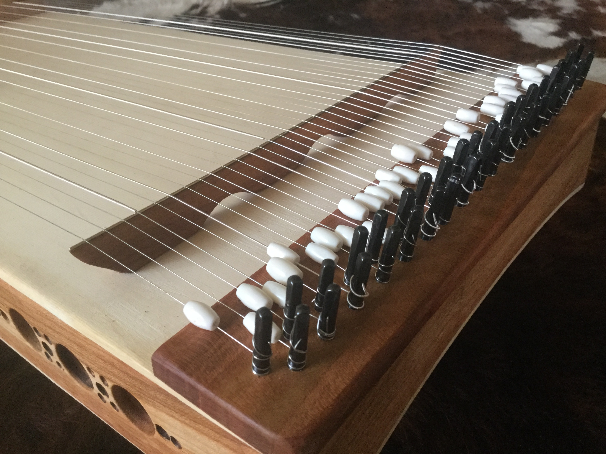

Pianul
Date generale
Pianul este un instrument muzical acustic cu coarde inventat în Italia de către Bartolomeo Cristofori în jurul anului 1700, în care sunetul este produs de coarde metalice fixate pe o placă de rezonanță din lemn, lovite de ciocănele acoperite cu pâslă, prin intermediul unei claviaturi, care este compusă dintr-un rând de clape (mici pârghii) pe care interpretul le apasă sau le lovește cu degetele ambelor mâini. Pianele moderne au coardele montate într-un cadru metalic, de obicei turnat din fontă și finisat cu lac și pulbere de bronz (motiv pentru care este numit, impropriu, și „placă de bronz”). Acesta are rolul de a rezista tensiunii mari exercitate de coarde, care altfel ar deforma structura din lemn a pianului.
pian modern
Istorie
Povestea pianului începe la jumătatea secolului al XII-lea cu primul său strămoș - monocordul cu clape - căruia ulterior i-au fost adăugate mai multe coarde, transformându-se în mult mai cunoscutul clavicord, care funcționa printr-un mecanism de atingere a coardelor în momentul apăsării clapelor. Până la începutul secolului al XV-lea, clavicordul ajungea să aibă zece coarde, fiecare dintre ele producând cel puțin două note prin atingerea coardelor în două puncte diferite pe lungimea acesteia.
monocord cu clape
clavicord
Un alt instrument premergător pianului a fost clavecinul, care producea sunete atunci când în urma atingerii clapelor coardele erau ciupite de pene de lemn, așa cum buricul degetelor ciupește coardele de chitară. Acesta avea însă dezavantajul de a nu permite celui care cînta să ofere dinamism muzicii. Deși a fost des utilizat pe parcursul a două sute de ani, până în secolul al XVIII-lea claviatura sa ajungând până la opt octave, clavecinul a pierdut treptat teren în fața unui nou instrument numit pianoforte. În 1709, italianul Bartolomeo Cristofori din Padova, fabricant de clavecine, începea construcția primului mecanism de pian pe principiul atingerii coardelor cu ciocănele, fără ca acestea să rămână în contact cu coarda după producerea sunetului. În plus, impactul ciocănelelor putea fi controlat cu ajutorul pedalelor. Denumirea de pianoforte, menținută până în 1850, a fost dată tocmai datorită acestui principiu de funcționare care permitea obținerea unui sunet variat și clar, mai lung sau mai scurt, mai tare sau mai încet, în funcție de dorința celui care acționa clapele. Invenția lui Cristofori a fost menționată pentru prima dată în 1711, împreună cu o schiță a instrumentului, într-un document scris de către Francesco Scipione Maffei, constituind sursa de inspirație pentru prima generație de fabricanți de piane. De-a lungul vieții, Bartolomeo Cristofori a construit aproximativ douăzeci de piane, doar trei dintre acestea, care datează din anul 1720, păstrîndu-se până în zilele noastre în muzee din Europa și SUA.
clavecin
un pian realizat de Bartolomeo Cristofori
pianoforte
Etimologie
Cuvântul pian este o formă prescurtată a termenului pianoforte, termenul italian pentru versiunile anilor 1700 ale instrumentului, care la rândul său derivă din gravicembalo col piano e forte - clavecin cu sunet slab și puternic - și fortepiano. Termenii muzicali italieni piano și forte indică "slab", respectiv "puternic", care în acest context se referă la variații de volum (de exemplu intensitate sonoră) produse ca răspuns la atingerea pianistului sau a presiunii pe clape: cu cât o clapă este apăsată cu o viteză mai mare, cu atât este mai mare forța cu care clapele apasă coardele, deci cu atât este mai puternic sunetul produs de nota respectivă si cu atât este mai puternic atacul partiturii. Numele a fost creat ca un contrast cu clavecinul, un instrument muzical care nu permite variații de volum.